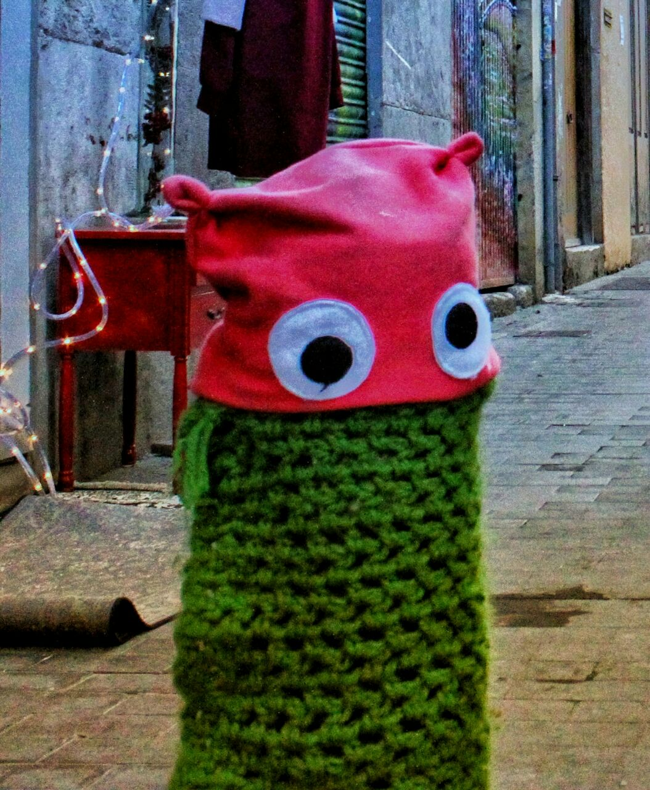

The Author. I was born in Spain and have been tinkering with computers since I was 8 years old. A few quotes I resonate with: - Be kind. - Being normal is overrated. - I care about what people make, not what they own. 